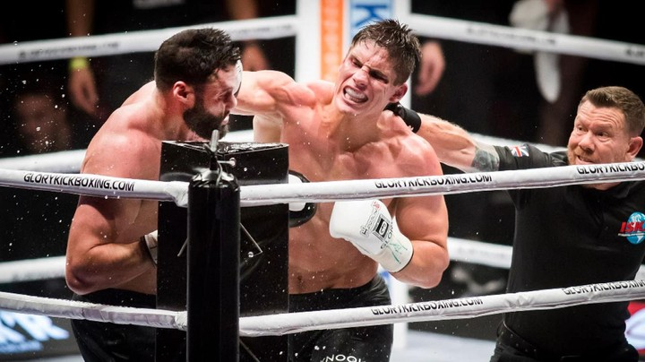

Kickboksen is een vechtsport waarbij zowel de handen als de benen mogen worden gebruikt.
De sport kent zijn oorsprong in Japan en de Verenigde Staten,
en werd daar populair in het begin van de jaren 1970.
Bij kickboksen worden de stoten van het boksen gecombineerd met de trappen uit sporten zoals karate en taekwondo.
KickBoks in Nederland
In Nederland zijn Jan Plas en Thom Harinck bekende personen die kickboksen introduceerden.
Het kickboksen in Nederland is eerder afgeleid van de Japanse variant en lijkt meer op thaiboksen dan op het Amerikaanse full-contact.
Een andere vergelijking is de van Eurosport afgeleide K-1, alleen mag er wel geclincht worden.
Hoe snel de clinch opgebroken wordt is afhankelijk van de klasse en kickboksbond
en bij sommige wedstrijden zijn elleboogstoten ook toegestaan. Men spreekt dan van Thaise regels of full muay thai.
